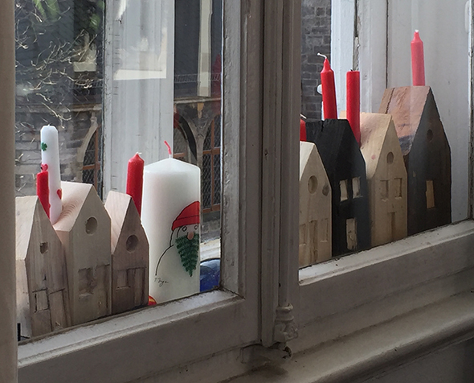
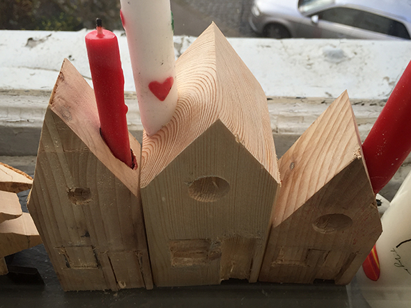
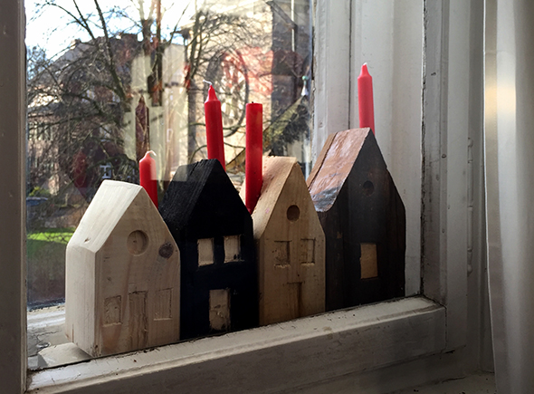

Inicio›Blog›Invierno›Casita de maderaInviernoCasita de madera30 diciembre, 2015   Mi padre hace tantas cosas que debería tener su propio blog. Aquí tenéis unas casitas de madera con vela que ha hecho! Me encantan!Etiquetas: luz← Feliz Año NuevoEMOJI imanes →